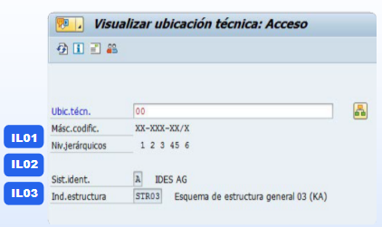
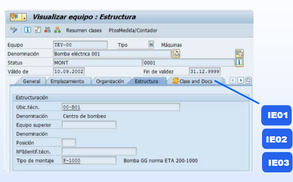

Centro de Control de Objetos Técnicos
Selecciona un objeto para explorar su definición, proceso de gestión y la anatomía de sus datos en SAP PM.
Ubicaciones Técnicas
Estructura jerárquica de la planta.Equipos
Objetos físicos individuales.Flujo de Proceso en SAP


| Acción | Código de Transacción |
|---|---|
| Crear Objeto | IL01 |
| Modificar Objeto | IL02 |
| Visualizar Objeto | IL03 |
| Crear Objeto | IE01 |
| Modificar Objeto | IE02 |
| Visualizar Objeto | IE03 |
El resultado es una lista jerárquica que muestra cómo se estructura la planta, permitiendo navegar por sus diferentes niveles.
El resultado muestra los detalles del equipo, incluyendo su ubicación técnica, historial y componentes asociados.
Anatomía de Datos Requeridos
Ubicaciones Técnicas
Datos Generales
Ce. Emplazamiento
Responsabilidad
Ubic. Técnica Superior
Equipos
Aprovisionamiento y Fabricación
Área de empresa y Criticidad
Imputación y Perfil catálogo
Equipo Superior / Instalados